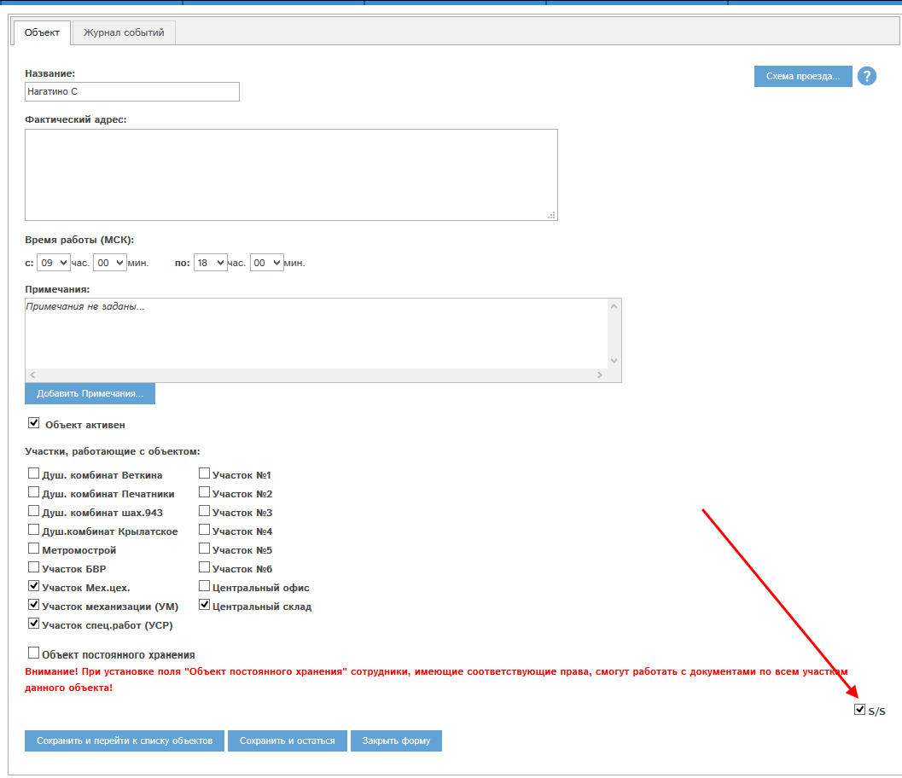

Рис. 1.1 Флаг «S/S» в карте Участка спец.работ (УСР)
В программе «Мобильный офис» есть возможность ограничить работу с документами на определенном сочетании участка и объекта, называемым далее «Секретный участок».
Если введены такие ограничения, то работа с документами для Секретного участка происходит по отдельным правам.
Те сотрудники, у кого нет прав на работу с Секретным участком, не видят документы для него в программе, а именно:
, и не видят аналитику и отчеты по этим документам:
Для того, чтобы создать такое сочетание участка и объекта, необходимо определенным образом отредактировать карты участка и объекта.
В картах участка и объекта необходимо установить флаг «S/S» и сохранить изменения.
Пример. Создадим Секретный участок для сочетания Участок спец.работ (УСР) и объект Нагатино С. Для этого установим флаг «S/S» в их картах и сохраним изменения:
Рис. 1.1 Флаг «S/S» в карте Участка спец.работ (УСР)

Рис. 1.2 Флаг «S/S» в карте объекта Нагатино С.
После сохранения изменений сочетание участка спец. работ (УСР) и объекта Нагатино С станет в программе «Мобильный офис» Секретным участком со всеми ограничениями на работу с его документами.